[9-1] USART串口协议 — 学习笔记
- 课程：江协科技《STM32入门教程-2023版 细致讲解 中文字幕》
- 视频：BV1th411z7sn?p=25，32:20（1940 秒）
- 素材：243 帧关键帧（每 8 秒，宽 1280px）+ PP-OCRv4 画面硬字幕 OCR（500 段）；关键截图 16 张随笔记收录（源图在
vidsum_out/stm32_p25/frames/，站内图片在assets/images/stm32-25/） - 字幕情况：该集 B 站没有 CC/AI 字幕，文本由画面烧录的中文字幕 OCR 得到（source=subtitle-ocr）；本集字幕里混入了 Keil Build Output（
Application running ...、Load ... Project.axf、Flash Load finished at ...）等噪声，这些不是老师口述内容，已剔除，错字已按画面校正（清单见文末「存疑」）。 - 本集定位：这是模块 9（USART 串口）的理论课，而且只讲「串口协议」这一半——00:36–04:56 只演示两个成品工程的现象（
9-1 串口发送、9-2 串口发送+接收，配 USB 转串口模块和电脑串口助手），04:56 起全是 PPT 讲通信接口、串口基础、电平标准、硬件电路、帧格式、波特率、校验位，最后一段是示波器实测波形。本集没有写一行代码、没有讲库函数、没有 USART 外设框图（只在 11:44/11:52 闪过两页「波特率发生器」「USART简介」作预览）；USART 外设结构、引脚映射、寄存器与全部代码都在 P26 [9-2]，本集内容一律注明「在 P26」。
一句话结论
串口（USART）是单片机领域最简单、最常用的通信接口之一：它成本低、线路简单，只要 TX、RX、GND 三根线（VCC 视供电情况可省）就能让两个设备互相通信，还能直接接电脑（经 USB 转串口芯片，如 CH340）——这是串口相对 I2C/SPI 的最大优势：可以接电脑屏幕打印信息、调试程序。协议上它是全双工、异步、单端、点对点：全双工靠 TX/RX 两根独立的线（发送线路与接收线路互不影响）；异步＝没有时钟线，双方必须事先约定波特率（采样频率），并用起始位/停止位做帧头和帧尾来对齐；单端＝电平是对 GND 的电压差，所以必须共地（前三种单端接口都得加 GND；CAN/USB 是差分信号，抗干扰强、CAN 可不共地，USB 仍需共地）。电平标准有三种，别记反：TTL：+3.3V 或 +5V = 1、0V = 0（STM32 用这个）；RS232：-3～-15V = 1、+3～+15V = 0（负逻辑！电压大、抗静电干扰，大型机器用）；RS485：两线压差 +2～+6V = 1、-2～-6V = 0（差分，可传上千米）；TTL/RS232 只能几十米。一帧数据的格式是：起始位（固定低电平，靠一个下降沿打破空闲高电平）→ 数据位（有效载荷，低位先行！）→ 可选的校验位 → 停止位（固定高电平，把引脚恢复高，为下一帧的下降沿做准备）——无校验时 1 帧共 10 位（1 起始 + 8 数据 + 1 停止），带校验时 1 帧 11 位（1 起始 + 9 + 1 停止）。关于「数据位 8 还是 9」有两种等价描述：把校验位算进数据位就是「9 位数据」（8 位有效载荷 + 1 位校验）；把校验位独立出来就是「数据位 8 + 校验位 1」——串口助手用的是后者。波特率＝每秒传输的码元数（Baud），二进制调制下数值上等于比特率（bps）：例如 9600 波特率下每一位 1/9600 ≈ 104us（本集示波器实测：0x55 的波形就是「起始位 + 10101010 + 停止位」，每位约 104us；4800 波特率则每位约 208us、10 位约 2ms 多）。校验位是简单的奇偶校验（保证含校验位在内 1 的个数为奇数或偶数），检出率有限（两位同时错就查不出），要更高可靠性可以了解 CRC。USART 外设本身（自动按字节生成/接收数据帧、波特率发生器最高 4.5Mbit/s、数据位 8/9、停止位 0.5/1/1.5/2、C8T6 有 USART1/2/3）本集只预览，具体框图与代码在 P26。
0. 本集定位：理论课（只讲协议），USART 外设与代码在 P26
- 本集是纯理论课：00:09–00:29 先用 PPT 讲通信接口总表，00:36–04:56 才演示两个成品工程的现象，之后全 PPT；全程没有打开 Keil 写代码、没有编译下载。
- 本集只讲「串口协议」（前半部分）：老师明确把串口知识分成两半——前半是「串口的通信协议」（软硬件规则，与具体硬件无关），后半是「STM32 内部的 USART 外设」；本集只讲前半，后半在 P26 [9-2]。
- 片头两个成品工程：①
9-1 串口发送——只用发送功能，通过串口把数据发到电脑的串口助手显示；②9-2 串口发送+接收——收到数据后回传电脑、并在 OLED 上显示。 - 本集只「预览」了 USART 外设两页：11:44 的「波特率发生器」（公式
fPCLK2/1 /(16 × DIV)与手册 USART_BRR）、11:52 的「USART简介」；没有 USART 框图页、没有引脚映射表、没有库函数——所以本笔记不写外设结构与代码，统一注明「在 P26」。 - 片尾（32:20）「这就是串口通信」直接收尾，没有下集预告语；按内容顺序，下集就是 USART 外设与代码。
1. 片头两个成品工程
1.1 程序① 9-1 串口发送
- 目前这个代码只有发送的功能：写一个串口的模块，通过串口通信把一些数据发送到电脑上的串口助手来显示；
- 代码预览（成品工程，非现场编写）：先
Serial_Init()初始化串口，然后是一串功能函数——- 发送一个字节：
Serial_SendByte(0x41)； - 发送一个数组：
uint8_t MyArray[] = {0x42, 0x43, 0x44, 0x45};+Serial_SendArray(MyArray, 4)； - 发送字符串、发送数字：
Serial_SendString("\r\nNum1=");、Serial_SendNumber(111, 3);； - 三种实现 printf 的方法：
printf("\r\nNum2=%d", 222);、sprintf(String, "\r\nNum3=%d", 333);+Serial_SendString(String);、Serial_Printf(...)；
- 发送一个字节：
- 现象接线：STM32 的串口引脚经 USB 转串口模块 接到电脑；电脑端打开串口助手，选串口号、其他参数按 STM32 程序的配置设好、打开串口，按一下 STM32 的复位键——程序每次上电后会通过串口发送一批数据；
- 现象①：先收到
0x41（SendByte 发的），接着0x42 0x43 0x44 0x45（SendArray 发的），然后是文本数据Num1=111、Num2=222……；把接收模式切成「文本模式」后，软件会对数据做文本映射、找每个数据对应的字符显示出来，于是0x41～0x45就显示成ABCDE。
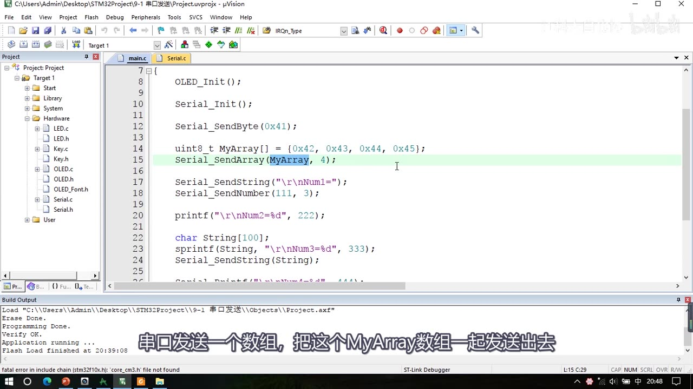
图 1：程序① 9-1 串口发送 的 main.c（成品代码预览）——OLED_Init(); Serial_Init(); Serial_SendByte(0x41);、MyArray 数组（0x42～0x45）、Serial_SendArray(MyArray, 4);（高亮）、Serial_SendString("\r\nNum1=")、Serial_SendNumber(111, 3)、printf("\r\nNum2=%d", 222)、sprintf(String, "\r\nNum3=%d", 333) + Serial_SendString(String)；字幕「串口发送一个数组，把这个MyArray数组一起发送出去」
1.2 程序② 9-2 串口发送+接收
- 程序主体：判断是否收到数据 → 收到就读取数据 → 把数据回传到电脑 → 并在 OLED 上显示；
- 现象：串口助手发送/接收都选 HEX 模式，写一个数据
41发送——OLED 上显示接收到的数据41，屏幕接收区也收到41；把接收模式换成文本模式再发，显示的就是数据41对应的字符文本A； - HEX 模式与文本模式的区别（本集重要概念）：串口里只能发送二进制数（也就是十六进制最直接的数据）；想发送字符，就需要一个「数据到字符」的映射表——最简单最常用的就是 ASCII 码表：
0x41映射为字符A。所以发0x41时，HEX 模式显示数据本身41，文本模式会去查映射表、发现对应A就显示A。
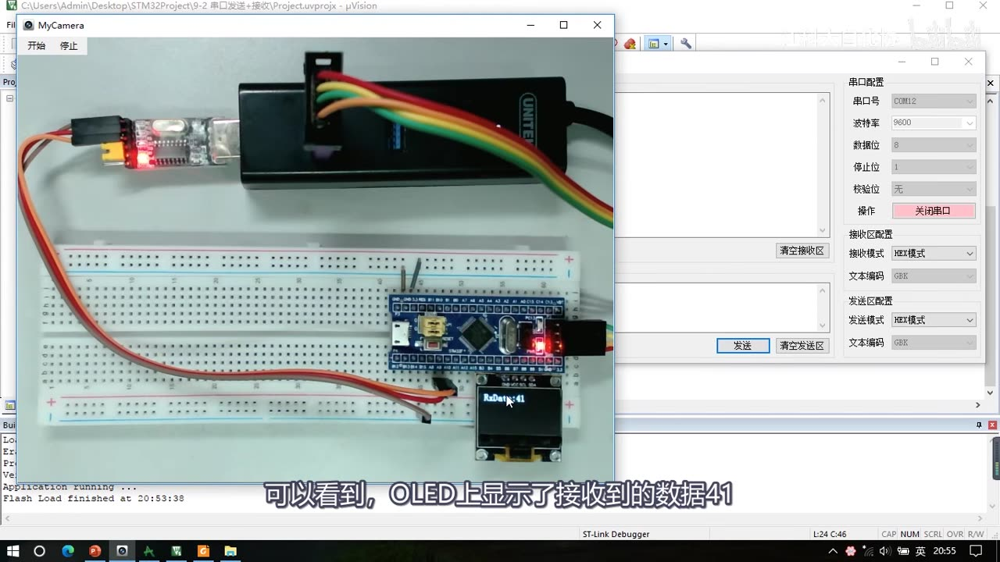
图 2：程序② 9-2 串口发送+接收 现象——左侧面包板上 STM32 + USB 转串口模块，右侧串口助手参数：串口号 COM12、波特率 9600、数据位 8、停止位 1、校验位 无、接收模式 HEX模式；OLED 显示 RxData:41；字幕「可以看到，OLED上显示了接收到的数据41」
2. 通信接口总表：五种通信协议一览
2.1 为什么需要通信、什么是通信协议
- 通信的目的：将一个设备的数据传送到另一个设备，扩展硬件系统。
- STM32 内部集成了很多功能模块（定时器计数、PWM 输出、AD 采集等），这些是芯片内部的电路，配置寄存器、数据寄存器都在芯片里面，直接读写就行；
- 但有些功能 STM32 内部没有（比如蓝牙无线遥控、陀螺仪加速度计测姿态），只能外挂芯片——外挂芯片的数据在 STM32 外面，怎么获取？就需要在两个设备之间连一根或多根通信线，通过通信线路发送/接收数据、完成数据交换，从而控制外挂模块、读取外挂模块的数据；
- 所以「单片机有了通信功能，就能与众多别的模块互联，极大地扩展了硬件系统」。
- 通信协议：制定通信的规则，通信双方按照协议规则进行数据收发——比如考试想传答案，可以约定「先咳嗽一声代表通信开始、竖一个手指代表 A、竖两个手指代表 B、竖三个 V 代表 C、挥手代表通信结束」，这套约定的规则就是通信协议（当然考试作弊是不对的）。
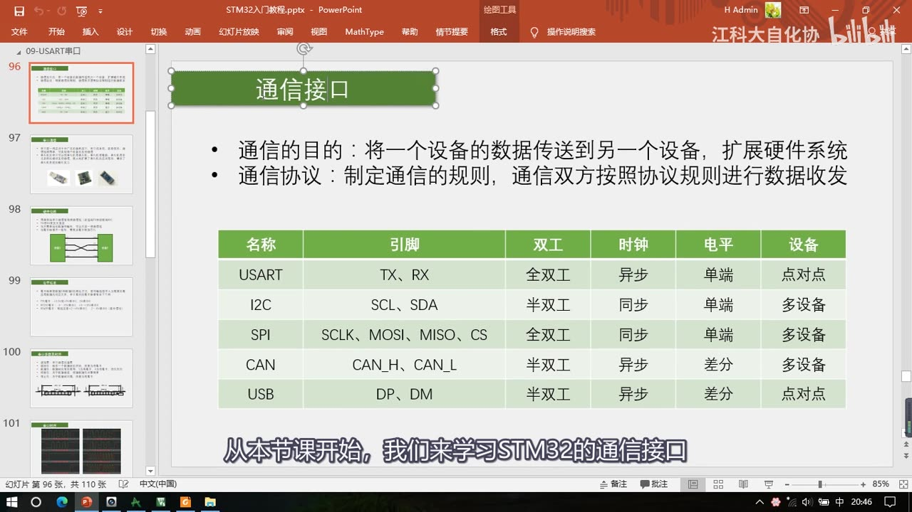
图 3：PPT「通信接口」——通信的目的「将一个设备的数据传送到另一个设备，扩展硬件系统」与通信协议「制定通信的规则，通信双方按照协议规则进行数据收发」两行；下方是 5 种通信接口总表；字幕「从本节课开始，我们来学习STM32的通信接口」
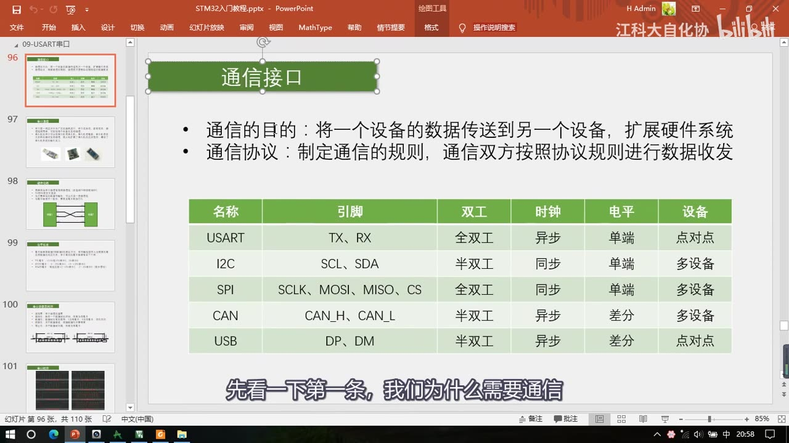
图 4：同一页 PPT（讲「为什么需要通信」时）——上方两行要点不变，下方 5 行接口总表；字幕「先看一下第一条，我们为什么需要通信」
2.2 五种接口对照表
| 名称 | 引脚 | 双工 | 时钟 | 电平 | 设备 |
|---|---|---|---|---|---|
| USART | TX、RX | 全双工 | 异步 | 单端 | 点对点 |
| I2C | SCL、SDA | 半双工 | 同步 | 单端 | 多设备 |
| SPI | SCLK、MOSI、MISO、CS | 全双工 | 同步 | 单端 | 多设备 |
| CAN | CAN_H、CAN_L | 半双工 | 异步 | 差分 | 多设备 |
| USB | DP、DM | 半双工 | 异步 | 差分 | 点对点 |
- 本芯片（C8T6）五种通信接口全部都支持；
- 这张表只列了最典型、最常用、最简单的配置——各种通信协议应用都很宽泛、参数也很多，后续学到会再深入分析。
引脚命名：
- USART：TX（Transmit Exchange）是数据发送脚、RX（Receive Exchange）是数据接收脚（有的地方写 TXD/RXD，意思一样）；
- I2C：SCL（Serial Clock）是时钟、SDA（Serial Data）是数据；
- SPI：SCLK（Serial Clock）是时钟、MOSI（Master Output Slave Input）是主机输出数据脚、MISO（Master Input Slave Output）是主机输入数据脚、CS（Chip Select）是片选（用于指定通信对象）；
- CAN：CAN_H、CAN_L 是一对差分数据脚（用两个引脚表示一个差分数据）；
- USB：DP（Data Positive）、DM（Data Minus），或者叫 D+、D-，也是一对差分数据脚。
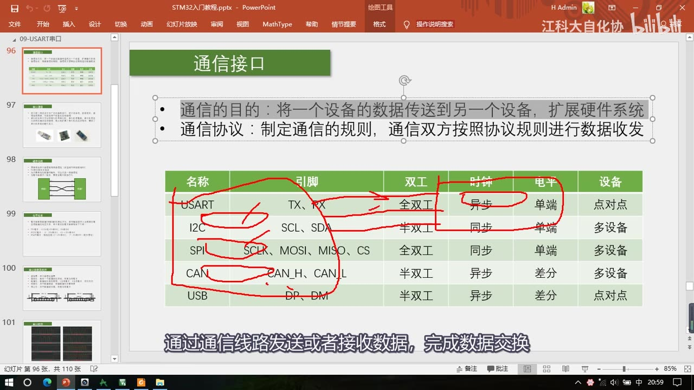
*图 5：同一张接口表上的红笔标注——红圈圈住 USART 行并标出 TX/RX、全双工、异步、单端，其他行也画了圈（I2C 的 SCL/SDA、SPI 的 SCLK…、CAN 的 CAN_H/CAN_L、USB 的 DP/DM）；字幕「通过通信线路发送或者接收数据，完成数据交换」*
2.3 四条特性逐个看
- ① 双工模式：
- 全双工＝通信双方能够同时进行双向通信，一般来说都有两根通信线——比如串口一根 TX 发送、一根 RX 接收；SPI 一根 MOSI 发送、一根 MISO 接收；发送线路和接收线路互不影响；
- 半双工＝剩下这些（I2C、CAN、USB）都只有一根数据线——CAN 和 USB 的两根差分线也是组合成为「一根数据线」，所以都是半双工；
- 单工＝数据只能从一个设备到另一个设备、不能反过来——比如把串口的 RX 引脚去掉，串口就退化成单工了。
- ② 时钟特性（同步/异步）：发送一个波形（高电平、低电平），接收方怎么知道你是 1、0，还是 1、1、0、0？ 需要有时钟信号告诉接收方「什么时候采集数据」：
- I2C 和 SPI 有单独的时钟线 → 同步，接收方可以在时钟信号指引下采样；
- 串口、CAN、USB 没有时钟线 → 异步，需要双方约定一个采样频率，并且还要加一些帧头帧尾来做采样位置的对齐。
- ③ 电平特性（单端/差分）：
- 上面三种（USART/I2C/SPI）都是单端信号——引脚的高低电平都是对 GND 的电压差，所以单端信号通信的双方必须共地（GND 接在一起）；通信的引脚前三个还应加一个 GND 引脚，不接 GND 是没法通信的；
- CAN 和 USB 是差分信号——靠两个差分引脚的电压差来传输信号，通信时可以不需要 GND（不过 USB 协议里有些地方需要单端信号，所以 USB 还是需要共地）；差分信号可以极大地提高抗干扰特性，所以一般传输速度和距离都会更高、性能不错。
- ④ 设备特性：
- 串口和 USB 属于点对点的通信（只有两个人，直接传数据）；
- 中间三个（I2C/SPI/CAN）可以在总线上挂载多个设备，所以需要有一个寻址的过程来确定通信对象。
3. 串口通信是什么
- 串口是一种应用十分广泛的通讯接口：成本低、容易使用、通信线路简单，可实现两个设备的互相通信；
- 在单片机领域，串口其实是一种最简单的通信接口——协议相比 I2C、SPI 已经非常简单，而且一般单片机里面都会有串口的硬件外设，使用非常方便；
- 串口一般都是点对点的通信，所以是两个设备之间的互相通信；
- 单片机的串口可以使单片机与单片机、单片机与电脑、单片机与各式各样的模块互相通信，极大扩展了应用范围、增强了系统的硬件实力；
- 单片机和电脑通信是串口的一大优势：可以接电脑屏幕，非常适合调试程序、打印信息——像 I2C 和 SPI 这些一般是芯片之间的通信，不会接在电脑上；
- 三种常见的串口设备（PPT 实物图）：
- USB 转串口模块：上面有芯片 CH340，可以把串口协议转换为 USB 协议——一边是 USB 口插电脑、另一边是串口引脚接支持串口的芯片，这样就能实现串口和电脑的通信；
- 陀螺仪传感器模块：可以测量角速度、加速度等姿态参数，左右各 4 个引脚，一边是串口引脚、另一边是 I2C 引脚；
- 蓝牙串口模块：下面 4 个脚是串口通信引脚，上面的芯片可以和手机互联，实现手机遥控单片机。
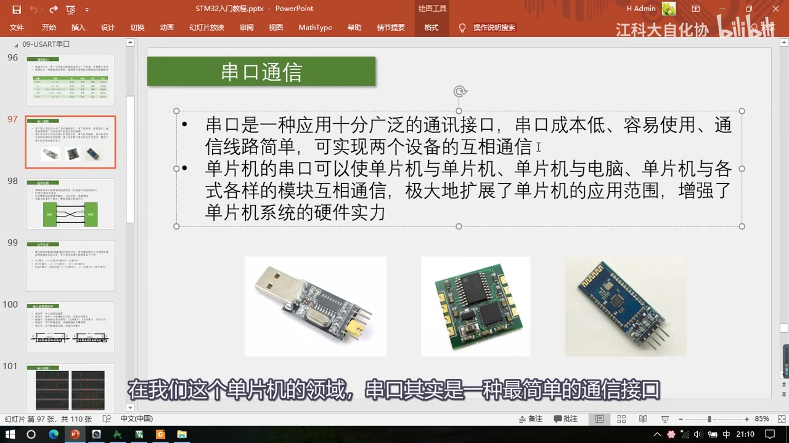
图 6：PPT「串口通信」——串口定义（成本低、易用、线路简单、两设备互相通信）与单片机串口用途；下方三张实物图：USB 转串口模块（CH340）、陀螺仪传感器模块、蓝牙串口模块；字幕「在我们这个单片机的领域，串口其实是一种最简单的通信接口」
4. 电平标准：TTL / RS232 / RS485
- 电平标准是数据 1 和数据 0 的表达方式，是传输线缆中人为规定的电压与数据的对应关系；串口常用的有三种：
- TTL 电平：+3.3V 或 +5V 表示 1、0V 表示 0——这是单片机电路中最常见的（5V 器件就是 +5V、3.3V 器件就是 +3.3V；逻辑 1 就是高电平的电压，也就是 VCC 的电压）；
- RS232 电平：-3～-15V 表示 1、+3～+15V 表示 0（负逻辑！）——RS232 一般用在大型机器上，环境可能比较恶劣、静电干扰比较大，所以电平的电压都比较大、允许波动范围也很大；
- RS485 电平：两线压差 +2～+6V 表示 1、-2～-6V 表示 0——电平参考是两线压差，所以 RS485 是差分信号，抗干扰能力非常强，通信距离可以达到上千米；
- 距离对比：RS485 可上千米，而TTL 和 RS232 最远只能几十米，再远就传不了；
- STM32 这类低压小型设备用的都是 TTL 电平，后续内容也都基于 TTL 讲解；如果设备需要其他电平，加电平转换芯片就行——在软件层面它们都属于串口，程序并不会有什么变化；
- 硬件上：一个设备用 TX 发送高低电平、另一个设备用 RX 接收高低电平，线路上用 TTL 电平；STM32 是 3.3V 器件，所以线路对地 3.3V 代表逻辑 1、对地 0V 代表逻辑 0。
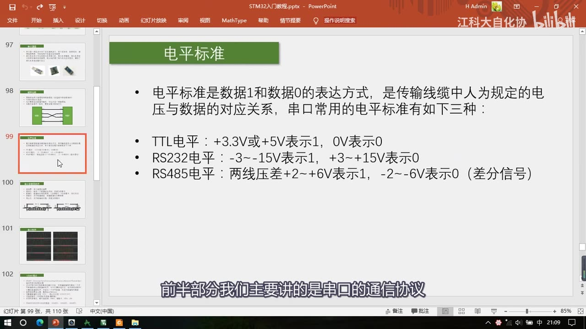
*图 7：PPT「电平标准」——定义 + 三种电平：TTL：+3.3V 或 +5V 表示 1、0V 表示 0；RS232：-3～-15V 表示 1、+3～+15V 表示 0；RS485：两线压差 +2～+6V 表示 1、-2～-6V 表示 0（差分信号）；字幕「前半部分我们主要讲的是串口的通信协议」*
5. 硬件电路：怎么接线
- 一般串口通信的模块都有 4 个引脚：VCC、TX、RX、GND——VCC 和 GND 是供电，TX 和 RX 是通信引脚；
- GND 必须接：TX/RX 是单端信号，高低电平都是相对于 GND 的，所以严格来说 GND 也应该算通信线——TX、RX、GND 是必须要接的；
- VCC 可以不接：如果两个设备都有独立供电，VCC 可以不接；如果其中一个设备没有供电（比如 STM32 有独立供电、蓝牙串口模块没有），就需要把蓝牙串口的 VCC 和 STM32 的 VCC 接在一起、由 STM32 通过这根线给子模块供电——供电电压要按子模块的要求来；
- TX 与 RX 要交叉连接：TX 是发送、RX 是接收，一个设备的发送必须接另一个设备的接收、一个设备的接收接另一个设备的发送——「别接错了」；
- 单向传输时可以只接一根线：比如只需要设备 1 向设备 2 单向通信，就只接 TX→RX 这一根，另一根不接——这就变成了单工通信；
- 电平标准不一致时要加电平转换芯片：从控制器直接出来的信号一般都是 TTL 电平，相同的电平才能互相通信，不同电平需要转换芯片转接；
- 补充：简单的双向串口通信有两根通信线（TX 和 RX）；复杂一点的串口通信还有其他引脚（时钟引脚、硬件流控制引脚）——STM32 的串口也有这些引脚，但我们最常用的还是简单的串口通信（VCC、GND、TX、RX 这 4 个引脚）。
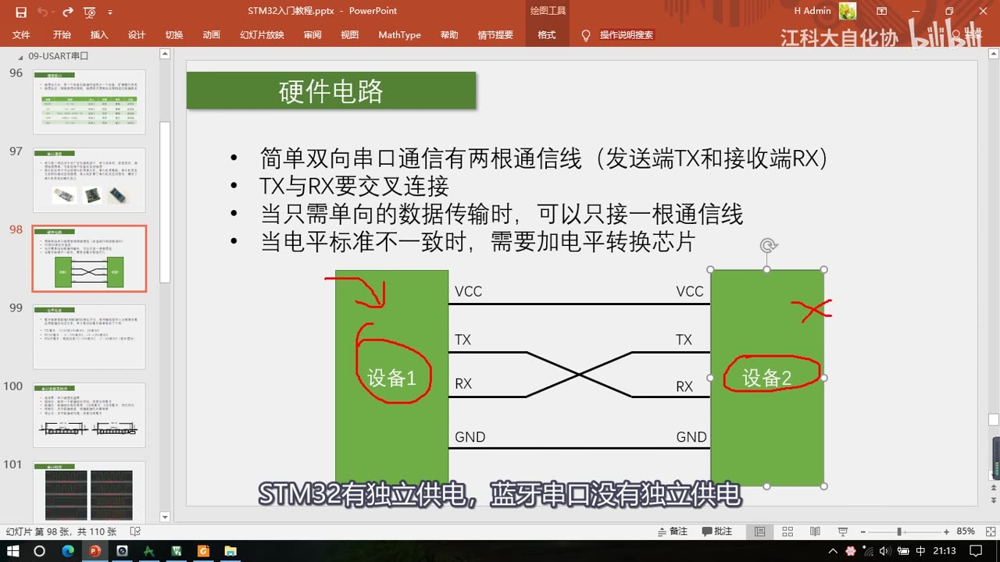
图 8：PPT「硬件电路」——四条要点（简单双向串口通信有两根通信线 TX/RX；TX 与 RX 要交叉连接；只需单向数据传输时可只接一根通信线；电平标准不一致时需加电平转换芯片）+ 示意图：设备1 与设备2 之间 TX→RX、RX→TX 交叉、GND 直连，VCC 连线上打了红叉（两边都有独立供电时可不接）；字幕「STM32有独立供电，蓝牙串口没有独立供电」
6. 串口参数与数据帧格式
6.1 五个参数
| 参数 | 含义 |
|---|---|
| 波特率 | 串口通信的速率（决定每一位的时间） |
| 起始位 | 标志一个数据帧的开始，固定为低电平 |
| 数据位 | 数据帧的有效载荷，1 为高电平、0 为低电平，低位先行 |
| 校验位 | 用于数据验证，根据数据位计算得到（可选） |
| 停止位 | 用于数据帧间隔，固定为高电平 |
- 每一帧的结构：空闲（高电平）→ 起始位 → 数据位 → 停止位 → 空闲；
- 帧长有两种：无校验时「1 帧共 10 位」= 1 起始 + 8 数据 + 1 停止；带校验时「1 帧共 11 位」= 1 起始 + 9 + 1 停止（图里 11 位帧把第 9 个数据位标成 RB8/TB8，也就是校验位的位置）。
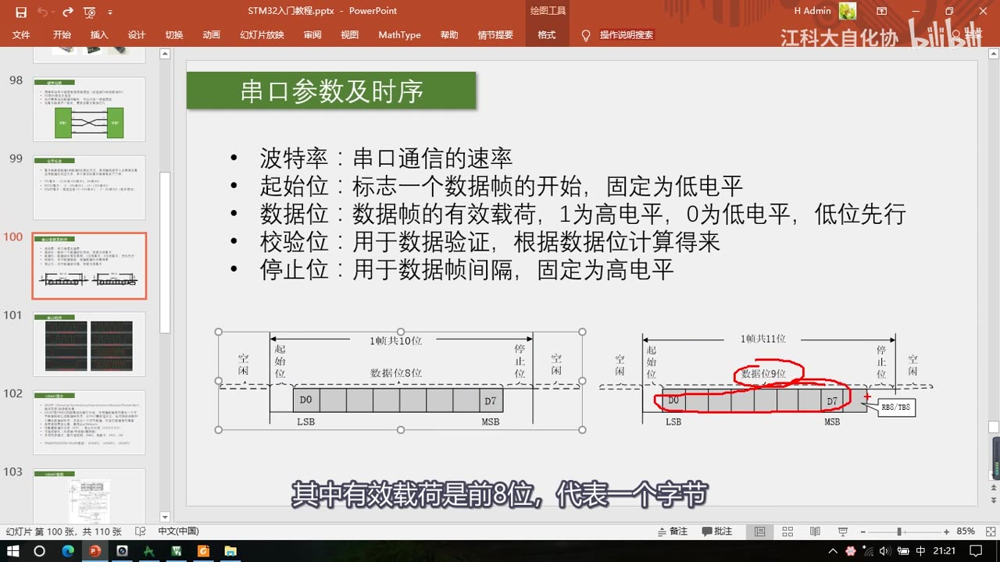
图 9：PPT「串口参数及时序」——上方 5 个参数（波特率/起始位/数据位/校验位/停止位），下方两张帧图：左侧 1 帧共 10 位（空闲、起始位、数据位 8 位 D0～D7、LSB→MSB、停止位、空闲），右侧 1 帧共 11 位（数据位 9 位，第 9 位标注 RB8/TB8 作为校验位）；字幕「其中有效载荷是前8位，代表一个字节」
6.2 起始位与停止位：为什么要它们
- 空闲状态是高电平：没有数据传输时，引脚必须置高电平作为空闲状态；
- 起始位固定为低电平：要传输时先发送一个起始位，用低电平打破空闲状态的高电平、产生一个下降沿——这个下降沿就告诉接收设备「这一帧数据要开始了」；如果没有起始位，发 8 个 1 时数据线一直是高电平、没有任何波动，接收方就没法知道你在发数据；
- 停止位固定为高电平：一个字节发完后必须有一个停止位，作用是数据帧间隔，同时把引脚恢复成高电平、为下一个起始位的下降沿做准备——如果没有停止位，而数据最后一位又是 0，下次再发新的一帧就没法产生下降沿了；
- 如果没有数据了，引脚正好也是高电平，代表空闲状态。
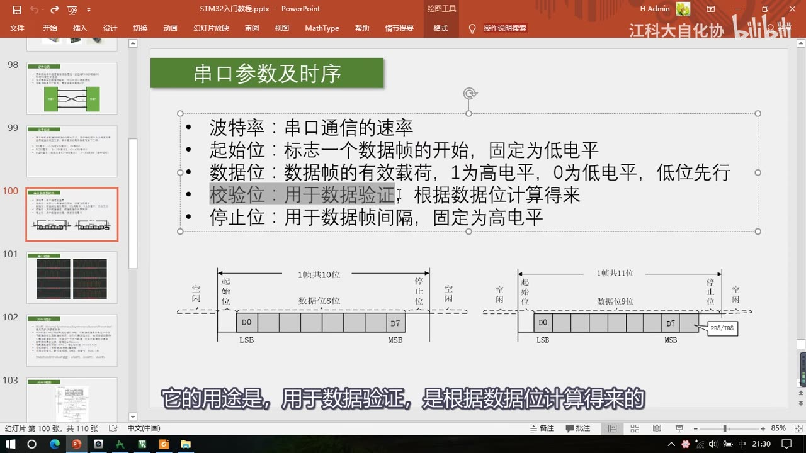
图 10：同一张「串口参数及时序」页（讲校验位时）——5 个参数要点可见，两张帧图可见（右侧 11 位帧的数据位 9 位与 RB8/TB8）；字幕「它的用途是，用于数据验证，是根据数据位计算得来的」
6.3 数据位：低位先行
- 数据位表示数据帧的有效载荷，为高电平就是 1、为低电平就是 0，低位先行（LSB 先发）；
- 例子：要发送
0x0F——先转成二进制0000 1111，低位先行，所以从低位开始发，发送顺序是1111 0000，依次放到发送引脚上； - 所以想发送一个字节，就按波特率要求定时翻转引脚电平、产生对应的波形就行了。
6.4 校验位与「8 位 / 9 位数据」的等价说法
- 校验位用于数据验证，是根据数据位计算来的；串口用的是奇偶校验——可以判断数据传输是不是出错，出错可以丢弃或要求重传；
- 校验有三种：无校验（波形就是起始位 + 数据位 + 停止位，共 3 部分）、奇校验、偶校验（波形是起始位 + 数据位 + 校验位 + 停止位，共 4 部分）；
- 奇校验：包括校验位在内的 9 位数据中，1 的个数要为奇数——比如传
0000 1111（4 个 1，偶数），校验位就补 1（连同校验位共 5 个 1，奇数）；如果传0000 1110（3 个 1，奇数），校验位补 0（仍是 3 个 1，奇数）； - 接收方收到后验证数据位和校验位：如果 1 的个数还是奇数就认为没出错；如果传输中因干扰有一位翻转，奇偶特性就变了，接收方验证不通过 → 认为出错，可以丢弃或要求重传；
- 偶校验同理，只是保证 1 的个数为偶数；
- 奇偶校验检出率不高：如果有两位数据同时出错，奇偶特性不变，就校验不出来——所以只能保证一定程度的数据校验；想要更高检出率可以了解 CRC 校验（更可靠也更复杂，STM32 内部也有 CRC 外设）。
- 关于「数据位 8 还是 9」——两种等价描述：
- 一种是把校验位作为数据位的一部分：分为**「8 位数据」和「9 位数据」**，其中 9 位数据 = 8 位有效载荷 + 1 位校验位；
- 另一种是把数据位和校验位独立开：「数据位」就是有效载荷，「校验位」就是独立的 1 位——串口助手软件用的就是这种分开描述（数据位 8 位、校验位 1 位）；
- 两种说法描述的是同一个东西。
7. 波特率与比特率（预览页，细节在 P26）
- 波特率原本的意思是「每秒传输码元的个数」，单位是码元/s，或者直接叫波特（Baud）；另外还有个速率叫比特率——每秒传输的比特数，单位 bit/s（bps）；
- 在二进制调制下，一个码元就是一个 bit，此时波特率＝比特率；单片机的串口通信基本都是二进制调制（高电平表示 1、低电平表示 0，一位就是 1bit），所以串口的波特率经常和比特率混用（数值相等没关系）；如果是多进制调制，两者就不一样了；
- 反应到波形上：双方约定波特率 1000bps，就表示 1 秒要发 1000 位，每一位的时间就是 1ms——发送方每隔 1ms 发一位、接收方每隔 1ms 收一位，波特率决定了每隔多久发送一位；
- 如果接收快了就会重复接收某些位、接收慢了就会漏掉某些位，所以发送和接收必须约定好速率；
- 本集只预览了 USART 的波特率发生器页（细节在 P26）：发送器和接收器的波特率由波特率寄存器 BRR 里的 DIV 确定，计算公式：波特率 = fPCLK2/1 / (16 × DIV)；手册 25.6.3 节 USART_BRR 给了 DIV 的构成——地址偏移 0x08、复位值 0x0000，其中 位 15:4
DIV_Mantissa[11:0]（USARTDIV 的整数部分）、位 3:0DIV_Fraction[3:0]（USARTDIV 的小数部分）——具体怎么算、怎么配在 P26。
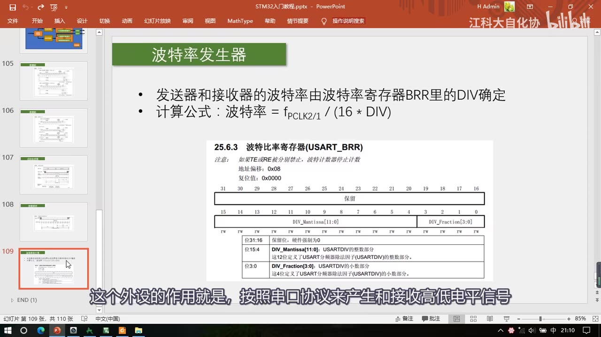
*图 11：「波特率发生器」预览页——发送器和接收器的波特率由波特率寄存器 BRR 里的 DIV 确定；计算公式：波特率 = fPCLK2/1 / (16 × DIV)；下方是手册 25.6.3 USART_BRR（地址偏移 0x08、复位值 0x0000、DIV_Mantissa（11:0 位）与 DIV_Fraction（3:0 位） 的位定义说明）；字幕「这个外设的作用就是，按照串口协议来产生和接收高低电平信号」*
8. 示波器实测波形
这些波形都是作者用示波器实测的：探头 GND 接负极、探头接在发送设备的 TX 引脚，然后发送数据就能捕捉到。
- 0x55 @ 9600：这是发送一个字节
0x55时 TX 引脚的波形——波特率 9600，所以每一位的时间是 1/9600 ≈ 104us（波形上一位就是 100us 多一点）；空闲是高电平 → 起始位产生下降沿 → 数据0x55转二进制低位先行，依次发送10101010→ 停止位把引脚置回高电平，一帧结束（参数是8 位数据、1 位停止、无校验）； - 0xAA：波形是起始位 +
01010101+ 停止位（也是低位先行的结果）； - 0xFF：8 个 1——波形是起始位之后一直保持高电平、然后停止位；0x00：8 个 0——起始位之后一直低电平、然后停止位恢复高电平；
- 一个容易混的点：0xFF 的数据帧结束后引脚仍是高电平、看不出变化——起始位下降沿之后的一个数据帧时间内的高电平算「数据 1」，帧结束后的高电平属于「空闲状态」，要等下一个下降沿才开启新的一帧；
- 4800 波特率：波特率变为一半，每位时间变两倍——一位约 208us，10 位一帧总共约 2ms（约 2.08ms）；波形趋势不变，只是时间拉宽了；
- 加偶校验位的 0x55：
0x55里 1 的个数是 4 个（偶数），所以校验位输出 0（低电平）——波形是起始位 +10101010+ 校验位0+ 停止位（含校验位在内 1 的个数仍为偶数）； - 停止位长度可配：可选 1 位、1.5 位、2 位等——1 位停止位时连续发两个
0x55，两帧会直接接在一起、中间没有空闲；2 位停止位时同样没有空闲，但停止位宽度是两位、两帧分隔更宽。
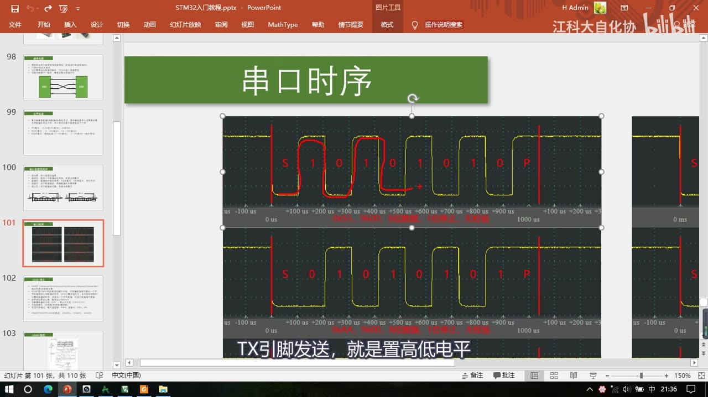
图 12：实测波形（0x55 与 0xAA）——上：0x55 波形，红笔标出起始位 S、数据 1 0 1 0 1 0 1 0、停止位 P，每位约 100us 多一点（104us）；下：0xAA 波形 S 0 1 0 1 0 1 0 1 P；字幕「TX引脚发送，就是置高低电平」
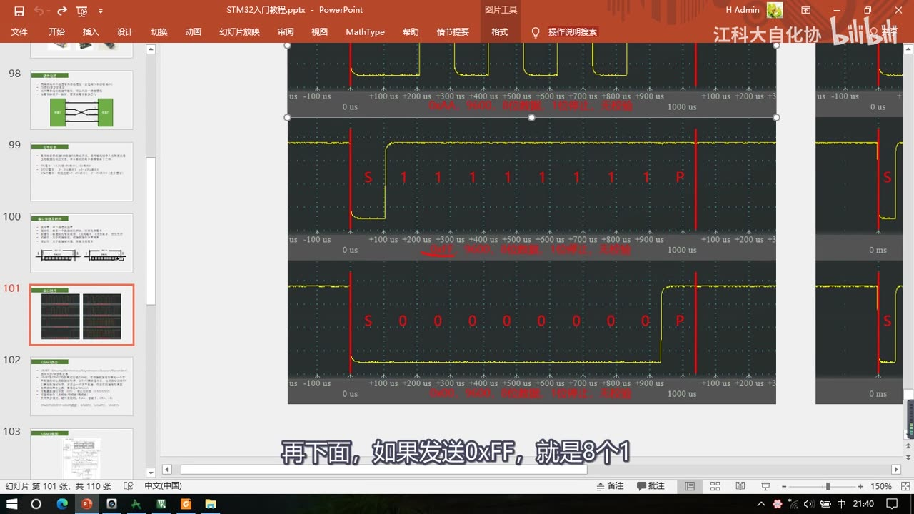
图 13：实测波形（0xFF 与 0x00）——上：0xFF 是起始位之后 8 个 1 一直保持高电平、再到停止位 P；下：0x00 是起始位之后 8 个 0 一直低电平、停止位恢复高电平；字幕「再下面，如果发送0xFF，就是8个1」
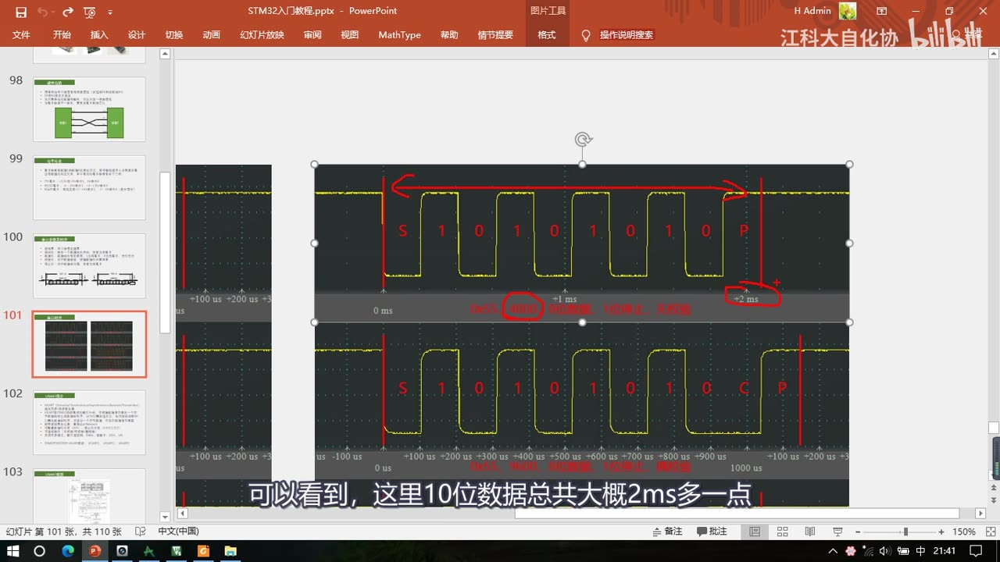
图 14：实测波形（4800 波特率 + 偶校验）——上：0x55 在 4800 波特率下的波形，红笔圈出 1000us、红箭头标出约 ±2ms（10 位一帧约 2ms 多，每位约 208us）；下：加了偶校验位的 0x55 波形，起始位 S、数据 10101010、校验位 C、停止位 P；字幕「可以看到，这里10位数据总共大概2ms多一点」
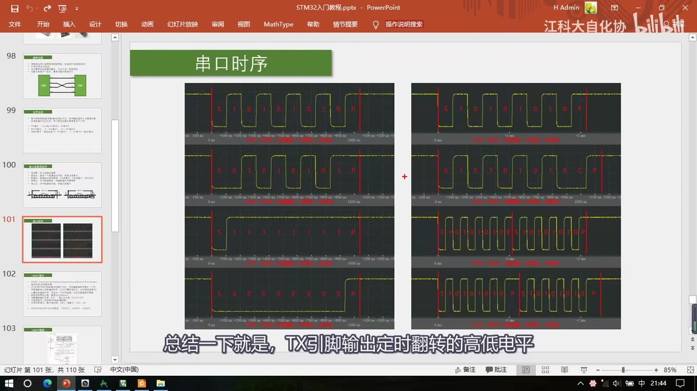
图 15：波形总览（左列：0x55 无校验、0xAA、0xFF、0x00；右列：0x55 带偶校验、1 位停止位连发两个 0x55、2 位停止位连发两个 0x55）；字幕「总结一下就是，TX引脚输出定时翻转的高低电平」
9. USART 外设预览（详情在 P26）
- 本集只快速翻了两页作预告，这里也只留结论：
- USART（Universal Synchronous/Asynchronous Receiver/Transmitter）通用同步/异步收发器，是 STM32 内部集成的硬件外设：可以根据数据寄存器的一个字节数据自动生成数据帧时序、从 TX 引脚发送出去，也可以自动接收 RX 引脚的数据帧时序、拼接为一个字节数据存放在数据寄存器里——也就是说这些「定时翻转电平」的工作由硬件自动完成，不用我们操心；
- 关键参数：自带波特率发生器，最高达 4.5Mbit/s；可配置数据位长度（8/9）；可配置停止位长度（0.5/1/1.5/2）；可选校验位（无/奇/偶）；支持同步模式、硬件流控制、DMA、智能卡、IrDA、LIN；
- STM32F103C8T6 的 USART 资源：USART1、USART2、USART3；
- 它的框图、引脚映射、寄存器与代码都在 P26 [9-2]。
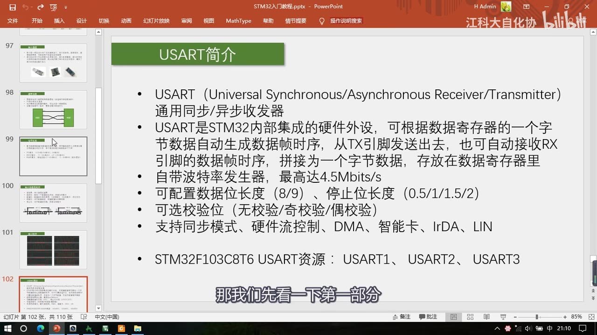
图 16：「USART简介」预览页——USART（Universal Synchronous/Asynchronous Receiver/Transmitter）通用同步/异步收发器；STM32 内部集成的硬件外设，可根据数据寄存器的一个字节数据自动生成数据帧时序从 TX 发送、也可自动接收 RX 数据帧拼接为字节存入数据寄存器；自带波特率发生器最高 4.5Mbit/s；数据位长度 8/9、停止位长度 0.5/1/1.5/2、校验无/奇/偶；支持同步模式、硬件流控制、DMA、智能卡、IrDA、LIN；STM32F103C8T6 USART 资源：USART1、USART2、USART3；字幕「那我们先看一下第一部分」
坑与易错点
- RS232 是负逻辑：-3～-15V 表示 1、+3～+15V 表示 0——和 TTL/RS485 的「高电平=1」相反，别记反。
- RS485 看的是「两线压差」：+2～+6V 表示 1、-2～-6V 表示 0，是差分信号；不要按单根线对地电压理解。
- TX 必须接对方的 RX：TX 对 TX 是接不通的；GND 必须共地（单端信号以 GND 为参考），VCC 只有在对方无独立供电时才接。
- 串口空闲是高电平；起始位固定低电平（靠下降沿告诉对方开始）；停止位固定高电平（恢复空闲、为下一帧下降沿做准备）。
- 数据位低位先行：发
0x0F时先发的是低 4 位1111，不是0000——波形的顺序和二进制书写顺序是反的（要看 LSB 标注）。 - 「8 位数据+1 位校验」和「9 位数据」是等价描述：串口助手用前者（数据位 8 + 校验位 1），有的资料用后者（9 位 = 8 有效载荷 + 1 校验）。
- 波特率和比特率在二进制调制下数值相等（都是 9600 时，9600Baud = 9600bps = 每位约 104us）；多进制调制时才不同。
- 波特率不一致会收发错位：接收快了重复接收、慢了漏掉——所以两端的波特率、数据位、停止位、校验必须完全一致。
- 9600 每位约 104us（1/9600）；4800 每位约 208us（一半波特率、时间翻倍）——算波形时间要按「位时间 × 位数」。
- 0xFF 帧结束后的高电平不算数据：帧内的高电平是数据 1，帧结束后的是空闲状态，要靠下一个下降沿开启新帧。
- 奇偶校验检出率有限：两位同时出错就查不出；要更强校验用 CRC。
- 不同电平标准不能直连：TTL、RS232、RS485 之间必须加电平转换芯片；但对软件来说都还是「串口」，程序不变。
- 本集不是 USART 外设课：本集没有框图/引脚映射/库函数/代码，这些都在 P26；
Serial_Init等函数是成品工程预览。
时间轴
| 时间 | 内容 |
|---|---|
| 0:05 | 开场：继续 STM32 入门教程 |
| 0:09 | 从本节课开始学习 STM32 的通信接口 |
| 0:13 | STM32 集成了很多用于通信的外设模块 |
| 0:18 | 表里有 USART、I2C、SPI、CAN 和 USB |
| 0:26 | 这么多种通信接口，C8T6 芯片是全部都支持的 |
| 0:29 | 本节先学第一个通信接口：USART 串口 |
| 0:36 | 先看本节课程序的现象：本节课共有两个程序 |
| 0:40 | 第一个是串口发送 |
| 0:42 | 第二个是串口发送+接收 |
| 0:45 | 先看第一个代码：目前只有发送功能 |
| 0:51 | 写一个串口模块，把数据发送到电脑上的串口助手显示 |
| 0:59 | 大概看一下最终的代码 |
| 1:01 | 先串口初始化，然后写一些功能函数 |
| 1:06 | 比如串口发送一个字节，字节数据是 0x41 |
| 1:11 | 串口发送一个数组（MyArray），还有发送字符串、发送数字 |
| 1:23 | 最后给出了 3 种实现 printf 函数的方法 |
| 1:27 | printf 是格式化打印字符串函数，可以移植到串口打印消息 |
| 1:43 | 下载看现象：通过 USB 转串口模块把 STM32 串口引脚接到电脑 |
| 1:55 | 电脑端打开串口助手，选串口号、其他参数按程序配置，打开串口 |
| 2:08 | 按一下 STM32 复位键，程序上电后通过串口发送一批数据 |
| 2:15 | 第一个是 0x41（SendByte 发的） |
| 2:24 | 之后 0x42～0x45 是 SendArray 发的 |
| 2:31 | 下面这些是发送的文本数据 |
| 2:35 | 切换接收模式为文本模式，软件会对数据做文本映射 |
| 2:43 | 显示 Num1=111、Num2=222 等，和程序里发的一样 |
| 3:02 | 上面 0x41～0x45 对应的字符其实就是 ABCDE |
| 3:11 | 第一个程序现象：串口发送数据到电脑 |
| 3:15 | 接着看第二个程序：串口发送+接收 |
| 3:23 | 程序主体：判断是否收到数据，收到就读取数据 |
| 3:30 | 把数据回传到电脑，并且在 OLED 上显示 |
| 3:38 | 下载看现象：打开串口助手，发送和接收都选 HEX 模式 |
| 3:49 | 写一个数据 41 发送，OLED 上显示了接收到的数据 41 |
| 3:57 | 屏幕接收区也收到了 41 这个数据 |
| 4:01 | 把接收模式换成文本模式再发送，显示的就是字符 A |
| 4:10 | 串口里只能发送二进制数（十六进制最直接的数据） |
| 4:17 | 想发送字符就需要数据到字符的映射表，最常用的是 ASCII 码表 |
| 4:26 | ASCII 码表里 0x41 映射为字符 A |
| 4:36 | 所以 HEX 模式显示数据本身，文本模式显示映射后的字符 |
| 4:49 | 这就是 HEX 模式和文本模式的区别 |
| 4:52 | 程序现象看完，回 PPT 看本节课知识点 |
| 4:56 | 先了解通信接口：第一条，我们为什么需要通信 |
| 5:02 | 通信的目的：将一个设备的数据传送到另一个设备，扩展硬件系统 |
| 5:10 | STM32 内部集成了很多功能模块（定时器、PWM、AD 采集等） |
| 5:21 | 这些电路和寄存器都在芯片内部，直接读写就行 |
| 5:29 | 但有些功能 STM32 内部没有，比如蓝牙遥控、陀螺仪测姿态 |
| 5:42 | 只能外挂芯片，外挂芯片的数据在 STM32 外面 |
| 5:49 | 需要在两个设备之间连通信线，发送/接收数据完成数据交换 |
| 6:04 | 所以通信的目的就是把一个设备的数据传送到另一个设备 |
| 6:09 | 有了通信就能与众多模块互联，极大扩展硬件系统 |
| 6:16 | 第二条是通信协议：制定通信的规则，双方按规则收发数据 |
| 6:25 | 比如考试传答案，约定咳嗽代表开始、手指数量代表 A/B/C |
| 6:49 | 通信的目的是传递信息，双方约定的规则就是通信协议 |
| 6:56 | STM32 里有下表中这么多通信协议 |
| 7:03 | 这个表先提前了解，之后学到还会深入分析 |
| 7:06 | 表中只列了最典型的参数，各种协议应用宽泛、参数很多 |
| 7:19 | 第一个 USART 串口，引脚是 TX 和 RX（也叫 TXD/RXD） |
| 7:32 | TX（Transmit Exchange）是数据发送脚，RX 是数据接收脚 |
| 7:38 | I2C 引脚是 SCL 和 SDA：SCL 是时钟，SDA 是数据 |
| 7:45 | SPI 引脚是 SCLK、MOSI、MISO、CS：SCLK 时钟、MOSI 主机输出 |
| 8:00 | MISO 是主机输入，CS 是片选（指定通信对象） |
| 8:04 | CAN 引脚是 CAN_H 和 CAN_L，两个差分数据脚表示一个差分数据 |
| 8:13 | USB 引脚是 DP（Data Positive）和 DM（Data Minus），也叫 D+/D- |
| 8:22 | 这就是这些通信协议规定的引脚 |
| 8:30 | 接着看特性，首先是双工模式 |
| 8:35 | 全双工：通信双方能同时进行双向通信，一般有两根通信线 |
| 8:45 | 串口一根 TX 发送、一根 RX 接收；SPI 一根 MOSI、一根 MISO |
| 8:54 | 发送线路和接收线路互不影响，就是全双工 |
| 8:58 | I2C、CAN、USB 都只有一根数据线（差分线也算一根）→ 半双工 |
| 9:09 | 还有单工：数据只能从一个设备到另一个，不能反过来 |
| 9:18 | 比如把串口 RX 去掉，串口就退化成单工 |
| 9:23 | 然后是时钟特性：发送波形后接收方怎么知道是 1 还是 0 |
| 9:34 | 需要时钟信号告诉接收方什么时候采集数据 |
| 9:40 | I2C 和 SPI 有单独时钟线 → 同步，接收方按时钟采样 |
| 9:53 | 串口、CAN、USB 没有时钟线 → 需要约定采样频率，即异步 |
| 10:01 | 异步还需要帧头帧尾等做采样位置对齐 |
| 10:05 | 之后是电平特性：前三种是单端信号（对 GND 的电压差） |
| 10:14 | 单端信号必须共地，前三种通信引脚还应加一个 GND 引脚 |
| 10:27 | CAN 和 USB 是差分信号，靠两个差分引脚的电压差传输 |
| 10:36 | 差分通信可以不需要 GND（但 USB 协议有些地方需要单端，仍要共地） |
| 10:44 | 差分信号抗干扰特性强，传输速度和距离都更高 |
| 10:54 | 最后是设备特性：串口和 USB 是点对点通信 |
| 10:59 | I2C、SPI、CAN 可以在总线上挂多个设备，需要寻址确定对象 |
| 11:18 | 通信协议和特征就讲这么多，之后还会再学 |
| 11:24 | 接着学串口知识点，分两部分 |
| 11:28 | 前半是串口的通信协议（软硬件规则，与具体硬件无关） |
| 11:39 | 后半是 STM32 内部的 USART 外设（按协议产生/接收高低电平） |
| 11:52 | 先看第一部分：看过了 USART 简介页与波特率发生器页 |
| 12:08 | 串口应用广泛：成本低、易用、线路简单、点对点 |
| 12:20 | 单片机领域串口是最简单的通信接口，协议比 I2C/SPI 简单多了 |
| 12:27 | 一般单片机都有串口硬件外设，使用方便 |
| 12:33 | 串口都是点对点，是两个设备之间的互相通信 |
| 12:38 | 串口可使单片机与单片机、电脑、各式模块互相通信 |
| 12:47 | 单片机和电脑通信是串口一大优势，可接电脑屏幕调试打印 |
| 12:55 | I2C、SPI 一般是芯片之间通信，不会接电脑 |
| 13:09 | 看几个串口设备：第一个是 USB 转串口模块（CH340） |
| 13:18 | CH340 可以把串口协议转换为 USB 协议，实现串口与电脑通信 |
| 13:33 | 中间是陀螺仪传感器模块，可测角速度、加速度等姿态参数 |
| 13:45 | 它左右各 4 个引脚，一边是串口、一边是 I2C |
| 13:46 | 右边是蓝牙串口模块，下面 4 个脚是串口引脚 |
| 13:54 | 上面芯片可以和手机互联，实现手机遥控单片机 |
| 14:01 | 这些就是串口通信和用串口通信的模块 |
| 14:04 | 模块有了，看硬件电路怎么接线 |
| 14:09 | 一般串口模块都有 4 个引脚：VCC、TX、RX、GND |
| 14:15 | VCC/GND 是供电，TX/RX 是通信引脚 |
| 14:21 | TX/RX 是单端信号，电平相对 GND，所以 GND 也应算通信线 |
| 14:31 | 串口通信的 TX、RX、GND 是必须要接的 |
| 14:36 | 如果两个设备都有独立供电，VCC 可以不接 |
| 14:41 | 如果一个设备没供电（如蓝牙串口模块），就要把 VCC 接过来 |
| 14:57 | 由 STM32 通过这根线给子模块供电，电压要按子模块要求 |
| 15:08 | 看上面说明：简单双向串口通信有两根通信线（TX、RX） |
| 15:19 | 复杂一点的串口通信还有时钟、硬件流控制等引脚 |
| 15:25 | STM32 串口也有这些引脚，但最常用的是简单串口通信 |
| 15:36 | 下一条：TX 与 RX 要交叉连接 |
| 15:40 | TX 是发送、RX 是接收，一个设备的发送要接另一个设备的接收 |
| 15:55 | 当只需单向数据传输时，可以只接一根通信线（变成单工） |
| 16:15 | 当电平标准不一致时，需要加电平转换芯片 |
| 16:31 | 串口有很多电平标准，从控制器出来的信号一般是 TTL 电平 |
| 16:39 | 相同电平才能互相通信，不同电平要加转换芯片 |
| 16:43 | 说到电平标准，看串口常用的几种电平标准 |
| 16:46 | 电平标准是数据 1 和 0 的表达方式，是人为规定的电压与数据对应关系 |
| 16:50 | 单片机电路中最常见的是 TTL 电平：+5V 或 +3.3V 表示 1、0V 表示 0 |
| 17:18 | 串口常用的电平标准有三种：TTL、RS232、RS485 |
| 17:22 | TTL：+3.3V 或 +5V 表示 1，0V 表示 0（逻辑 1 就是 VCC 的电压） |
| 17:30 | RS232：-3～-15V 表示 1，+3～+15V 表示 0（负逻辑） |
| 17:38 | RS232 一般用在大型机器上，环境恶劣、静电干扰大，所以电压大、允许波动大 |
| 17:50 | RS485：两线压差 +2～+6V 表示 1，-2～-6V 表示 0 |
| 18:00 | RS485 电平参考是两线压差，所以是差分信号，抗干扰能力非常强 |
| 18:09 | 使用 RS485 通信距离可以达到上千米 |
| 18:13 | 而 TTL 和 RS232 最远只能达到几十米，再远就传不了 |
| 18:18 | 单片机这种低压小型设备用的都是 TTL 电平 |
| 18:26 | 如果设备需要其他电平，加电平转换芯片就行，软件层面程序不变 |
| 18:40 | 到这里串口协议的硬件部分就清楚了 |
| 18:44 | 硬件上：一个设备用 TX 发送、另一个用 RX 接收，线路用 TTL 电平 |
| 18:57 | STM32 是 3.3V 器件，线路对地 3.3V 代表逻辑 1、0V 代表逻辑 0 |
| 19:09 | 接线和发送 1/0 知道了，接下来看软件部分 |
| 19:10 | 如何用 1 和 0 组成要发送的一个字节数据 |
| 19:18 | 看时序图，这就是串口发送一个字节的格式（协议规定的） |
| 19:25 | 每个字节装载在一个数据帧里，由起始位、数据位、停止位组成 |
| 19:30 | 数据位有 8 个，代表一个字节的 8 位 |
| 19:39 | 右边数据帧还可以在数据位最后加一个奇偶校验位，数据位总共 9 位 |
| 19:44 | 有效载荷是前 8 位，校验位跟在后面占 1 位 |
| 20:02 | 看串口参数，第一个是波特率，规定通信速率 |
| 20:09 | 串口是异步通信，需要双方约定通信速率 |
| 20:13 | 比如每隔 1s 发一位，接收方也每隔 1s 接收一位 |
| 20:21 | 接收快了会重复接收某些位，慢了会漏掉某些位 |
| 20:29 | 所以发送和接收必须约定好速率，这个参数就是波特率 |
| 20:35 | 波特率本意是每秒传输码元的个数，单位码元/s 或 Baud |
| 20:43 | 还有比特率：每秒传输的比特数，单位 bit/s 或 bps |
| 20:53 | 二进制调制下，一个码元就是一个 bit，波特率等于比特率 |
| 21:00 | 单片机串口基本都是二进制调制，所以两个说法常混用 |
| 21:16 | 反应到波形：约定 1000bps，1 秒发 1000 位，每位 1ms |
| 21:37 | 发送方每隔 1ms 发一位、接收方每隔 1ms 收一位 |
| 21:46 | 波特率决定了每隔多久发送一位 |
| 21:50 | 起始位：标志数据帧开始，固定为低电平 |
| 21:54 | 串口空闲状态是高电平，没有数据传输时引脚必须置高 |
| 22:03 | 需要传输时先发起始位（低电平），打破高电平、产生下降沿 |
| 22:14 | 这个下降沿告诉接收设备这一帧要开始了 |
| 22:18 | 如果没有起始位，发送 8 个 1 时数据线一直高电平，接收方没法知道 |
| 22:32 | 同理一个字节发完后必须有停止位（固定高电平）做帧间隔 |
| 22:46 | 停止位也是为下一个起始位做准备，恢复高电平才能再产生下降沿 |
| 22:55 | 起始位固定 0 产生下降沿表示开始，停止位固定 1 恢复高电平 |
| 23:13 | 没有数据时引脚正好高电平，代表空闲状态 |
| 23:16 | 数据位表示有效载荷，1 为高、0 为低，低位先行 |
| 23:26 | 比如发送 0x0F，转二进制 00001111，低位先行发送 11110000 |
| 23:50 | 想发一个字节就按波特率要求定时翻转引脚电平产生波形 |
| 24:00 | 校验位用于数据验证，根据数据位计算得来 |
| 24:05 | 串口用奇偶校验判断数据是否出错，出错可丢弃或要求重传 |
| 24:13 | 校验有三种：无校验、奇校验、偶校验 |
| 24:20 | 无校验波形是起始位+数据位+停止位，奇偶校验多一位校验位 |
| 24:39 | 奇校验：包括校验位在内 9 位中 1 的个数为奇数 |
| 24:46 | 传 00001111（4 个 1）校验位补 1；传 00001110（3 个 1）校验位补 0 |
| 25:06 | 发送方补校验位保证 1 的个数为奇数，接收方验证 |
| 25:31 | 如果传输中有一位翻转，奇偶特性变化，接收方验证不通过 |
| 25:54 | 这就是奇校验的差错控制方法；偶校验是保证 1 的个数为偶数 |
| 26:04 | 奇偶校验检出率不高：两位同时出错时奇偶特性不变、查不出 |
| 26:17 | 想更高检出率可以了解 CRC 校验，STM32 内部也有 CRC 外设 |
| 26:29 | 串口时序就了解了，最后说明数据位有两种表示方法 |
| 26:33 | 一种把校验位作为数据位的一部分，分为 8 位数据和 9 位数据 |
| 26:46 | 9 位数据就是 8 位有效载荷 + 1 位校验位 |
| 26:51 | 另一种是把数据位和校验位独立开（数据位就是有效载荷） |
| 27:04 | 串口助手软件就是用分开描述：数据位 8 位、校验位 1 位 |
| 27:11 | 两种描述是同一个东西 |
| 27:17 | 最后看几个串口通信的实际波形（示波器实测） |
| 27:26 | 探头 GND 接负极、探头接发送设备的 TX 引脚，发送数据就能捕捉 |
| 27:41 | 第一个波形：发送 0x55、波特率 9600，每位 1/9600 约 104us |
| 28:01 | 没发送数据时是空闲高电平；数据帧开始先发起始位产生下降沿 |
| 28:11 | 0x55 转二进制低位先行，依次发送 10101010 |
| 28:19 | 参数是 8 位数据、1 位停止、无校验，所以之后就是停止位 |
| 28:30 | 停止位把引脚置回高电平，一个数据帧就完成了 |
| 28:31 | STM32 中根据字节翻转电平由 USART 外设自动完成，不用我们操心 |
| 28:43 | 也可以用软件模拟：定时器定 104us、时间到用 GPIO 置高低电平 |
| 29:02 | TX 发送就是置高低电平，RX 接收就是读高低电平 |
| 29:08 | 软件模拟接收：定时读引脚并拼接字节，还要外部中断在起始位下降沿触发 |
| 29:34 | 接着看波形：发送 0xAA 就是起始位+01010101+停止位 |
| 29:45 | 发送 0xFF 就是 8 个 1（起始位后一直高电平，然后停止位） |
| 30:01 | 起始位下降沿之后一个数据帧内的高电平算数据 1，帧结束后的高电平是空闲 |
| 30:17 | 发送 0x00 就是 8 个 0（起始位后一直低电平，停止位恢复高电平） |
| 30:31 | 右边波形：波特率改成 4800，波形时长变为原来二倍 |
| 30:40 | 10 位数据总共大概 2ms 多一点（约 2.08ms），一位约 208us |
| 30:55 | 数据波形时间拉宽，变化趋势不变 |
| 30:58 | 下面这个波形加了偶校验位：0x55 里 1 的个数是 4 个（偶数） |
| 31:07 | 所以输出的校验位是 0（低电平），含校验位共偶数个 1 |
| 31:17 | 最后看停止位变化：停止位可配 1 位、1.5 位、2 位等 |
| 31:25 | 1 位停止位时连续发两个 0x55，两帧接在一起、中间没有空闲 |
| 31:34 | 2 位停止位时停止位是两位宽度，两帧分隔更宽、也没有空闲 |
| 31:47 | 这就是不同长度停止位的现象 |
| 31:51 | 到这里串口协议的硬件和软件就介绍完了 |
| 31:55 | 总结：TX 引脚输出定时翻转的高低电平，RX 引脚定时读取高低电平 |
| 32:03 | 每个字节加起始位、停止位、可选校验位打包为数据帧依次收发 |
| 32:17 | 这就是串口通信 |
存疑
- 本集文本来自画面硬字幕的 OCR（PP-OCRv4，source=subtitle-ocr，500 段），不是 ASR。Keil Build Output 面板（画面可见
Application running ...）混入；Project.axf、Flash Load finished at、Programming Done.只在画面 Keil 面板里、未进入 OCR 文本，这些都不是老师口述内容；另有行首噪声（厂、门、丨、钥、工、十等）。典型 OCR 错字（本集实际出现）：串口→ 「串回」、接口→ 「接回/接可」、逻辑→ 「罗辑」、引脚→ 「引I脚/引1脚」、几十米→ 「帆十米」、SPI/I2C→ 「SPL/12C」，已按画面和上下文校正。 - 本集无代码、无库函数：片头出现的
Serial_Init、Serial_SendByte、Serial_SendArray、Serial_SendString、Serial_SendNumber、Serial_Printf都是成品工程的代码预览，没有现场编写；USART_Init、GPIO_Mode_AF_PP、NVIC 等本集未出现，都在 P26。 - USART 外设只有两页预览（11:44 波特率发生器、11:52 USART简介），没有 USART 框图页、没有引脚映射表；波特率公式
fPCLK2/1 /(16 × DIV)与 USART_BRR 的位定义只在这两页出现，本笔记按「预览」写、不展开配置（详 P26）。 - 「数据位 8 位 + 校验位 1 位」与「9 位数据」是等价描述：本笔记统一写成「无校验 10 位帧（1 起始+8 数据+1 停止）／带校验 11 位帧（1 起始+9+1 停止）」，并说明 9 位 = 8 位有效载荷 + 1 位校验位。
- 示波器波形是作者实测截图：0x55@9600 每位约 104us、4800 每位约 208us、10 位一帧约 2ms 多（约 2.08ms）；这些是作者的实测值，不是本机复现；不同示波器/探头测量可能有细微差异。
- 「串行 vs 并行」本集没有展开：老师只从「串口是最简单的通信接口、一位一位传」的角度讲，没有单独对比并行通信；本笔记不自行补充对比结论（如需要属背景常识）。
- RS232 负逻辑：PPT 与口述一致为 -3～-15V = 1、+3～+15V = 0（本笔记按此写，未写反）。
- 片尾无下集预告语：只说「这就是串口通信」，没有点名下一集内容；按知识分层推断 USART 外设与代码在 P26。